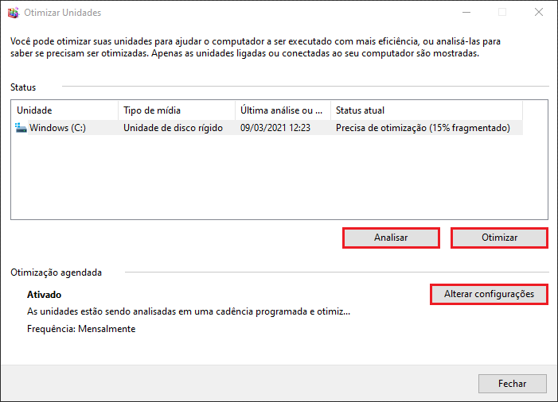
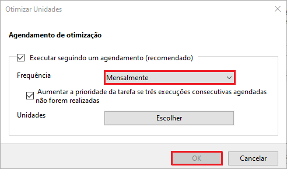
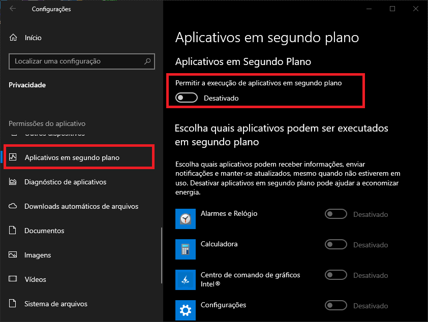
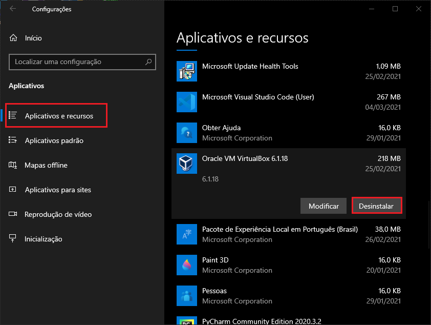
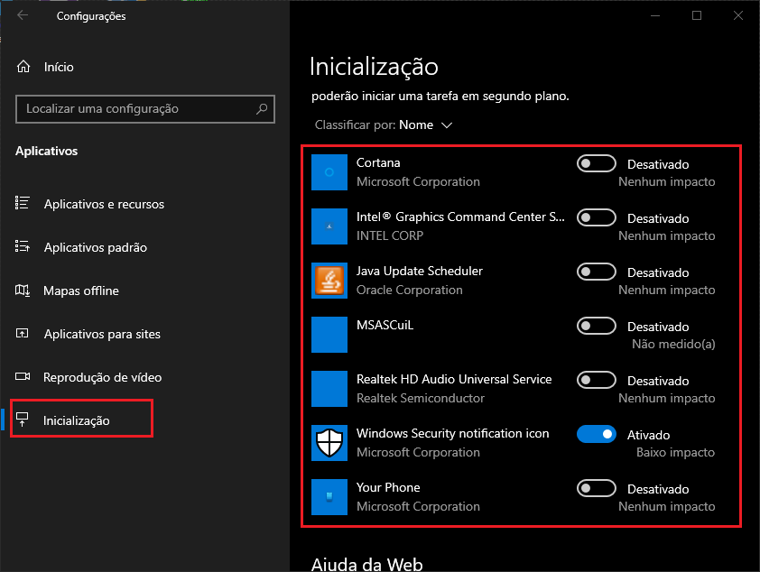
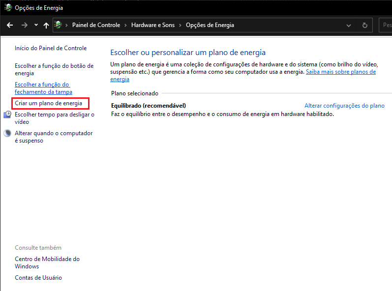
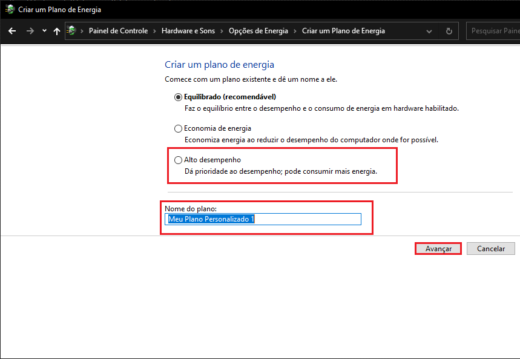
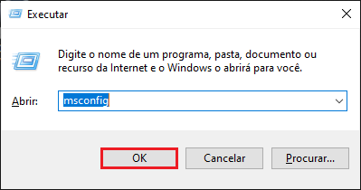
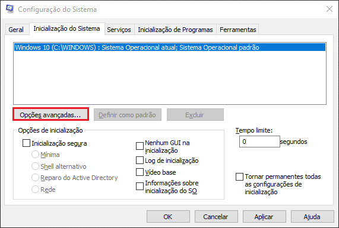
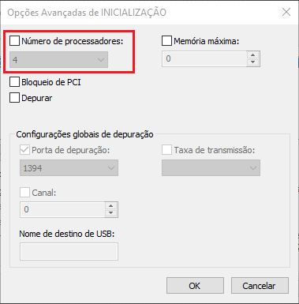

Procedimentos feitos por aplicativos nativos:
Limpeza de Disco:
Menu Iniciar > Ferramentas Administrativas do Windows
O Limpeza de Disco é um programa que exclui alguns arquivos desnecessários.
Nele estaram varios diretórios onde nos quais selecionados iram deletar os arquivos.
Se você não sabe o que marcar, no inicio do programa já estaram marcados alguns como padrão, apenas
de OK.
Depois aparecerá outra janela, finalize clicando em Excluir Arquivos.
Desfragmentador de Disco:
O Desfragmentador de Disco é capaz de analizar e "juntar" os dados do HDD ou partição. O processo de leitura e gravação no disco não é sequencial, e sim aleatório, então o Desfragmentador junta tudo.
Primeiro clique em Analizar, se na unidade estiver como que precisa de otimização, clique em Otimizar. Se não, vá em Alterar configurações.

Se a caixa de seleção Executar seguindo um agendamento não estiver marcada, marque e mude a frequência para Mensalmente.
No processo de desfragmentar, o disco pode acabar perdendo um pouco de sua vida util, se for um HDD isso não será uma preocupação,
porém num SSD, no longo prazo poderá ter uma diferença.
Ele também consome muito do desempenho, então a frequência "Diariamente" não é recomendado.
Configurações:
Menu Iniciar > Configurações
Privacidade:
Em "Aplicativos em segundo plano" desative a opção que está selecionada na imagem.
Aplicativos:
Voltando ao "Início", vá em Aplicativos e Recursos e desistale tudo que não irá usar.
Arranque do Windows:
Ainda em "Aplicativos", logo abaixo terá a opção de Inicialização. Clique nela e desative tudo que não queira que inicie com o Windows.
Opções de energia:
Se você usa o notebook sem bateria ou sempre na tomada, isso poderá ser útil.
Indo no canto inferior direito, no icone de batería 🔋, clique com o botão direito e depois em Opções de energia. Selecione a opção de Alto Desempenho, se não houver, como na imagem acima, Clique em Criar um plano de energia.
Selecione o Alto Desempenho e opcionalmente mude o "Nome do plano" para Alto Desempenho para facilitar. Finalize com Avançar.
msconfig:
Agora vamos chegar e configurações mais sensiveis. Para abrir o "msconfig", pressione as teclas Windows+R no teclado, escreva "msconfig" e de OK.
Depois lá no topo, vá na aba serviços:

Marque a caixa de seleção Ocultar todos os serviços Microsoft, clique em desativar tudo e OK.
Lembrando que depois desse procedimento, o computador pedira para reiniciar, você pode optar por reiniciar agora ou depois.
Obs:
Não terá problema de programas pararem de funcionar, se o processo for essencial ele será ativado automaticamente ou nem será desmarcado
quando clicar em Desativar tudo, há não ser que desative manualmente.
Extras:
Número de processadores:
Na aba de "Inicialização do Sistema", vá em Opções avançadas:

Se a caixa de seleção estiver desmarcada, pode só dar um ok, porém se estiver marcada, você pode ou desmarca-la ou selecionar o número máximo de processadores(núcleos).
(com a caixa desmarcada, será assumido o valor padrão que é o número máximo de processadores.)